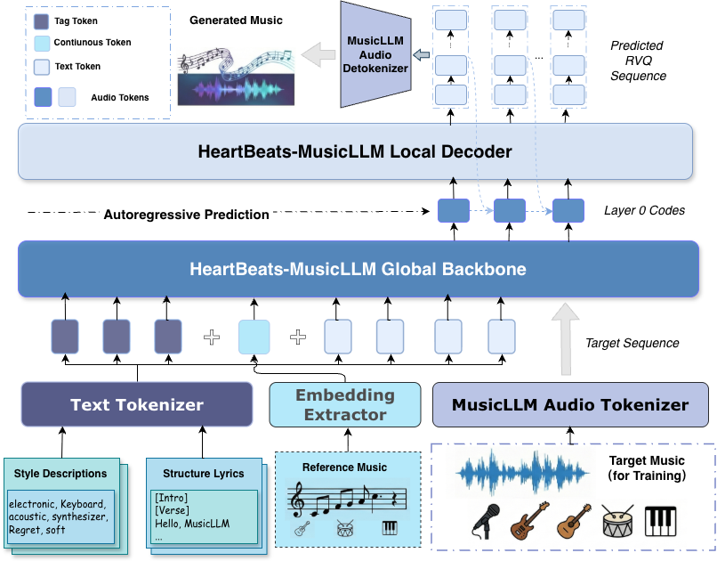

- HeartCLAP: Text-Audio Alignment
- HeartCodec: High Fidelity Audio Codec
- HeartTranscriptor: Lyric Transcription
Check out our GitHub repository for more details.
We present a family of open-source Music Foundation Models designed to advance large-scale music understanding and generation across diverse tasks and modalities. Our framework consists of four major components:
In addition, it provides two specialized modes:

Figure 1: The architecture of HeartMuLa ecosystem.
| Lyrics (Input) | Generated Audio Samples | ||
|---|---|---|---|
Click to Collapse Lyrics
[Verse]
窗外的灯光把影子拉得好长 对着空气练习这一场伪装 那杯热茶早就凉透了半晌 像我们之间还没说出的散场 [Prechorus] 以为时间能把遗憾都风化 原来伤口只是躲在心里结痂 越是安静越听见回忆在喧哗 一碰就崩塌 [Chorus] 能不能别把最后那句抱歉说完 留一点只有我们才懂的遗憾 像断了线的风筝飞向更蓝的彼岸 我站在原地守着空荡的孤单 这一首没写完的悲伤慢歌 就让你带走一半 [Verse] 街道熙攘只有我还在流浪 你的近况只能从别人嘴里听讲 不敢回望怕看见你在远方 那一抹微笑还是熟悉的模样 [Chorus] 能不能别把最后那句抱歉说完 留一点只有我们才懂的遗憾 像断了线的风筝飞向更蓝的彼岸 我站在原地守着空荡的孤单 这一首没写完的悲伤慢歌 就让你带走一半 [Outro] 余音渐停故事也该打烊 祝你安好哪怕天各一方 我一个人慢慢遗忘 |
Suno v4.5 | Mureka V7.6 | YUE |
| DiffRhythm | ACE-Step | HeartMuLa | |
Click to Collapse Lyrics
[Intro]
[Verse] In the frozen North where the winter bites I hold a crimson seed through the endless nights It is hard as stone, preserved in the cold A memory of you that never grows old [Prechorus] You are down South where the spring rain falls Gathering the harvest by the garden walls Two different worlds, but the color is the same [Chorus] Red beans scattered across the miles One brings tears and the other brings smiles Yours are blooming in the warm embrace Mine are hidden in a secret place North and South, we plant the yearning deep Promises that we are sworn to keep [Verse] I bury my token beneath the frost and snow Counting every season, watching them go You string yours together, a bracelet of desire Waiting for the day we reunite by the fire Distance is a test that the heart must endure [Chorus] Red beans scattered across the miles One brings tears and the other brings smiles Yours are blooming in the warm embrace Mine are hidden in a secret place North and South, we plant the yearning deep [Outro] One day the ice will finally melt away And bring the North to the South to stay Side by side, the red beans lay |
Suno v4.5 | Mureka V7.6 | YUE |
| DiffRhythm | ACE-Step | HeartMuLa | |
Click to Collapse Lyrics
[Verse]
Staring at the ceiling fan again Counting all the ways I never win My phone is buzzing with the highlight reels Of everyone I used to know and how they feel [Prechorus] Maybe I missed the starting gun Maybe I’m just the only one Who doesn’t know the rules of the game [Chorus] So write it on my forehead in permanent ink I’m a loser, baby, sinking in the sink No trophy on the shelf, no gold to display Just another zero in the light of day [Verse] I wore the wrong shirt to the party tonight Standing in the corner out of the light They’re talking stocks and real estate dreams I’m ripping at the loose threads on my jeans [Chorus] So write it on my forehead in permanent ink I’m a loser, baby, sinking in the sink No trophy on the shelf, no gold to display Just another zero in the light of day [Outro] Yeah, just a zero No hero here Fade away |
Suno v4.5 | Mureka V7.6 | YUE |
| DiffRhythm | ACE-Step | HeartMuLa | |
Click to Collapse Lyrics
[Verse]
Neon lights translate the static noise Heartbeat kicking like a brand new toy I leave the shadows in the dust behind Rewiring the chaos in my mind [Prechorus] The frequency is rising high Burning up the midnight sky Nothing’s gonna hold me down tonight [Chorus] We are the sparks catching the flame Running on a dream that calls our name Oh, it’s a vision in the ultraviolet glow Anything is possible, let the feeling flow Yeah, we’re never letting go [Verse] Gravity is trying to pull me deep But I’ve got promises that I must keep Unlock the door and throw away the key This is the version that I wanna be [Chorus] We are the sparks catching the flame Running on a dream that calls our name Oh, it’s a vision in the ultraviolet glow Anything is possible, let the feeling flow Yeah, we’re never letting go [Outro] |
Suno v4.5 | Mureka V7.6 | YUE |
| DiffRhythm | ACE-Step | HeartMuLa | |
Click to Collapse Lyrics[Intro][Verse] The pressure gauge is red and climbing high We watch the static bleed across the sky No use in praying for a quiet end We are the message that the signals send Forged in the fire of the machine [Prechorus] The countdown ticking in the dark Waiting for the final spark To blow the system wide apart [Chorus] We are the thunder breaking through the glass Nothing can stop us, nothing’s gonna last Screaming at the shadows in the void Until the silence is completely destroyed We rise above the noise and the decay [Verse] Chrome and concrete underneath our feet Moving to the rhythm of the beat We left the fear behind us yesterday There is no other path, no other way Fuel in the veins and iron in the soul [Bridge] Let the reactor overload We’re running down this open road It’s time to settle up the score We aren't the victims anymore [Chorus] We are the thunder breaking through the glass Nothing can stop us, nothing’s gonna last Screaming at the shadows in the void Until the silence is completely destroyed We rise above the noise and the decay [Outro] |
Suno v4.5 | Mureka V7.6 | YUE |
| DiffRhythm | ACE-Step | HeartMuLa | |
Check out our GitHub repository for more details.
@article{heartmula2025,
author = {Your Name and Others},
title = {HeartMuLa: A Family of Open Sourced Music Foundation Models},
journal = {arXiv preprint},
year = {2025},
}